Hot Drink Reminder Coaster
Kierra Long
Concept
The concept for my final project is a coaster that will remind me to drink my tea before it gets cold.
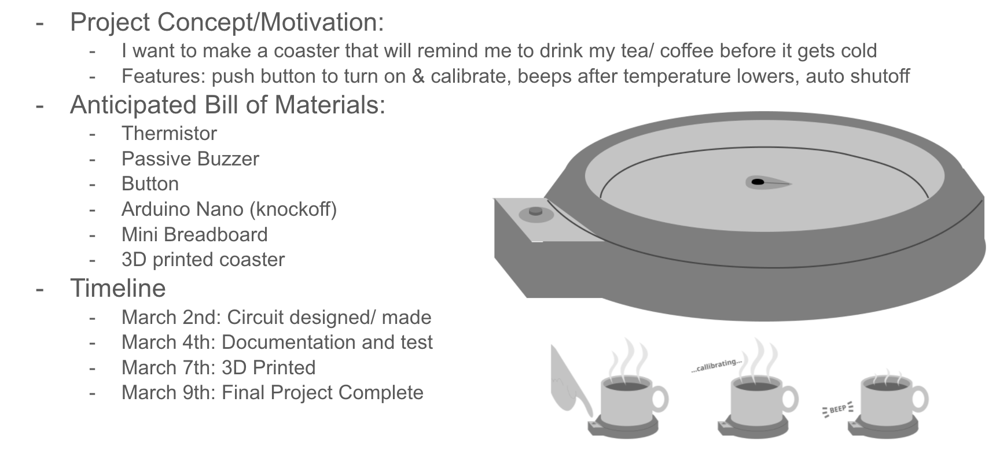Schematic
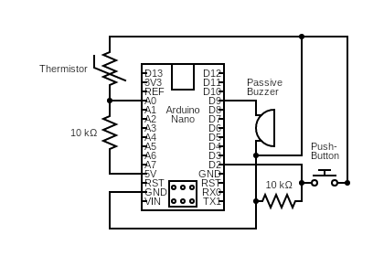
This is the schematic of my circuit. I used an Arduino Nano to control the circuit. I used
a voltage divider (from power to ground) with a 10K Ohm and a Thermistor (connected to pin A0) to take temperature voltage readings.
The circuit also has a pushbutton and a passivee buzzer. The Pushbutton uses a 10K Ohm resistor to limit current as
the power flows to ground.
I used 10K Ohm resistors to significantly slow current so that there would never be a moment
when unregulated current would flow.
Created with https://www.circuit-diagram.org/ & Canva
Circuit
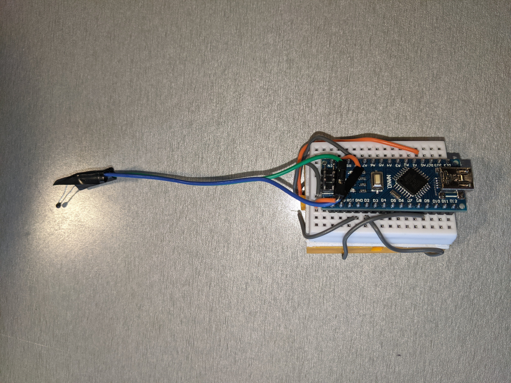 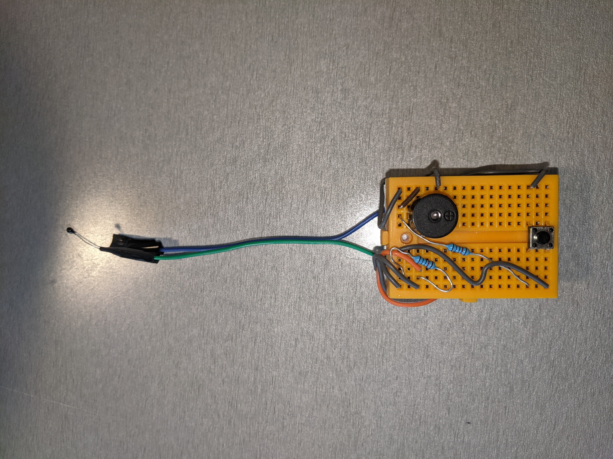
This is my circuit. I used two mini breadboards stuck together, with the Arduino pushed into one, and the button, buzzer, and resistors on the other side. I used wirs without the stiff part so that I could keep everything close to the breadboard, except for the thermistor.
Code
// variables
int roomTemp = 0; // The tracker of the average room temp
int hottest = 0; // The tracker of the average hottest temp
int goal; // The the goal thermistor reading to signal drink is ready
boolean startup = false; // The variable to track if the program just started
int buttonState = 0; // Button state
int times = 0; // Unused variable to keep track of time
int totalRoomTemp = 0; // Tracks total of room temp readings
int totalHottest = 0; // Tracks total of hottest readings
int current; // the current A0 thermistor reading
boolean over = false; // keeps track of whether the session just endeed
unsigned long startingTime; // remembers time of last callibration
unsigned long cTime; // keeps track of current time
//pins
int buzzer = 9; // buzzer pin
int button = 2; // button pin
int therm = A0; // thermistor pin
void setup() {
startup = true; // set startup as true
Serial.begin(9600); // begin serial write
pinMode(therm, INPUT); // initialize
pinMode(buzzer, OUTPUT); // initialize
pinMode(button, INPUT); // initialize
}
void loop() {
// put your main code here, to run repeatedly:
buttonState = digitalRead(button); // read button state
if (startup) { // if everything got reset
buttonState = HIGH; // set buttonstate falsely on to trigger callibration
startup=false; //turn startup to false
}
if (buttonState == HIGH) { // time to calibrate
tone(9, 261); //Short tone to signal room temp started
delay(100); // wait
noTone(9); // turn off buzzer
delay(100); // wait
// reset the variables
roomTemp=0; // reset room temp value
hottest=0; // reset hottest value
goal=0; // reset goal
totalRoomTemp = 0; // reset total room temp
totalHottest = 0; // reset total hottest
over = false; // allow it to work
// add room temperature values for 10 seconds
for (int i=0; i<20; i++) { // for 10 seconds
totalRoomTemp += analogRead(therm); // add to count
// Serial.println(analogRead(A0));
delay(500); // wait half a second
}
roomTemp = totalRoomTemp/20; // average the values to find average V reading
// Serial.print("room temp: ");
// Serial.println(roomTemp);
// play two tones to signal putting on the cup
tone(9, 261); //play tone
delay(100); //wait
noTone(9); //stop tone
delay(100); //wait
tone(9, 261); //play tone
delay(100); //wait
noTone(9); //stop tone
delay(100); //wait
delay(180000); //wait 3 minutes for the mug to even out temperature
//add up hot values for 10 seconds
for (int i=0; i<20; i++) { // for 10 seconds
totalHottest += analogRead(therm); // add to count
// Serial.println(analogRead(A0));
delay(500); // wait half a second
}
hottest = totalHottest/20; //average
// Serial.print("hottest: ");
// Serial.println(hottest);
// IDEALLY: hotter temperature gives lower reading than room temperature
int diff = roomTemp - hottest; // calculate difference
if (diff<0) { // if temperature actually increases
// error so beep wierdly
tone(9, 280);
delay(500);
noTone(9);
delay(200);
tone(9, 280);
delay(200);
noTone(9);
delay(200);
tone(9, 280);
delay(200);
noTone(9);
delay(200);
tone(9, 280);
delay(500);
noTone(9);
delay(200);
over= true; //turn off
}
// set a goal V value
goal = roomTemp-.80*diff; // 20% of the way to room temperature
// Serial.print("goal: ");
// Serial.println(goal);
// 3 beeps to signal end of callibration
for (int i=0; i<3; i++) { // 3 times
tone(9, 261); // set tone
delay(100); //wait
noTone(9); //turn off
delay(100); //wait
}
startingTime= millis(); // record the time of the cooling start
}
current = analogRead(therm); // read the thermistor reading
cTime = millis(); // get current time
if (current > goal && current<1023 && over != true) { // if the reading is beyond the goal
//alert user that it's ready
for (int i=0; i<3; i++) { // three times
tone(9, 261); // set tone
delay(500); // longer beep
noTone(9); // turn off
delay(500); // longer beep
}
over = true; //tell to stop beeping
}
if (cTime-startingTime > 900000) { //it's been on more than 15 minutes
//long beep to signal
tone(9, 261); // set tone
delay(1000); // long beep
noTone(9); // stop sound
over = true; // tell it to stop
}
while (over && (buttonState == LOW)) { // if it's off
//idle
delay(100); // wait
buttonState = digitalRead(button); // check button
}
delay(100); // wait
}
Form
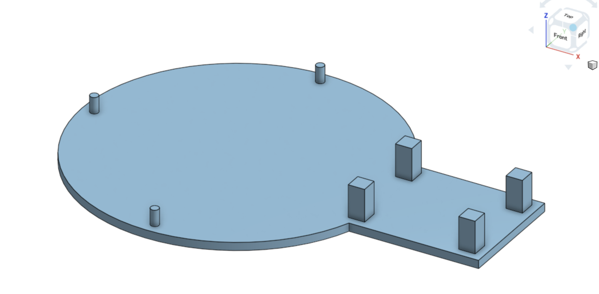 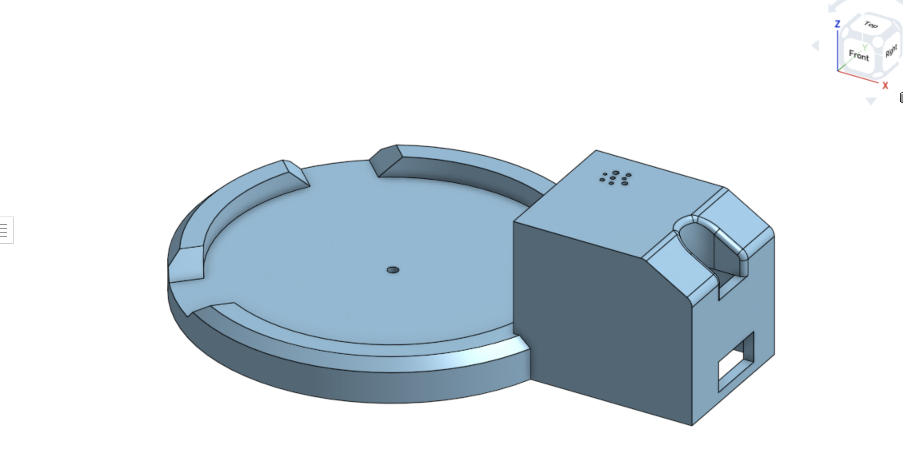 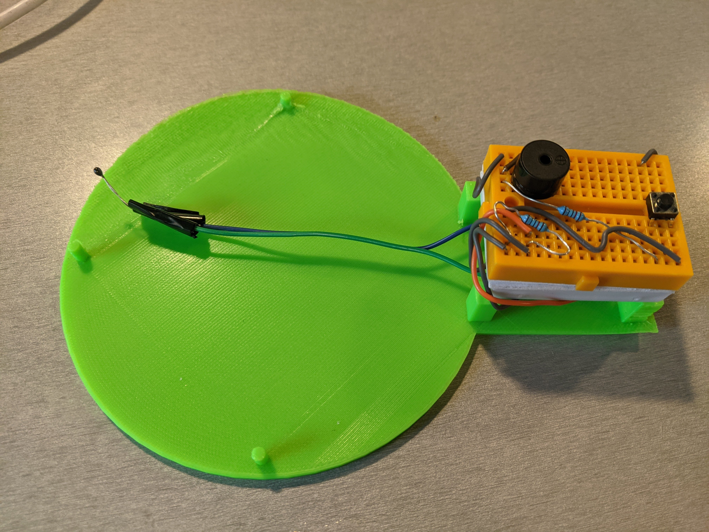 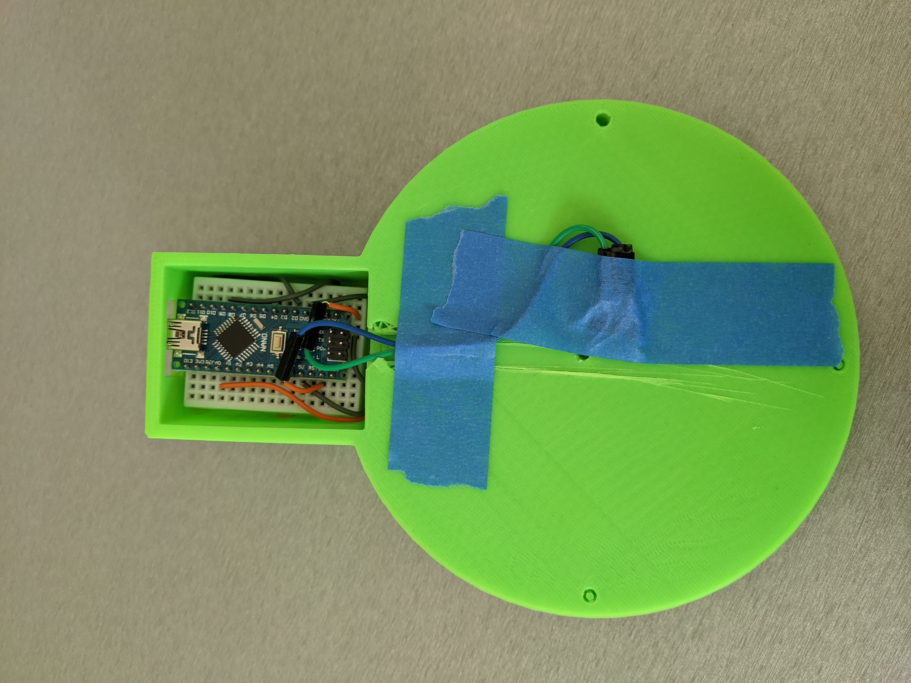 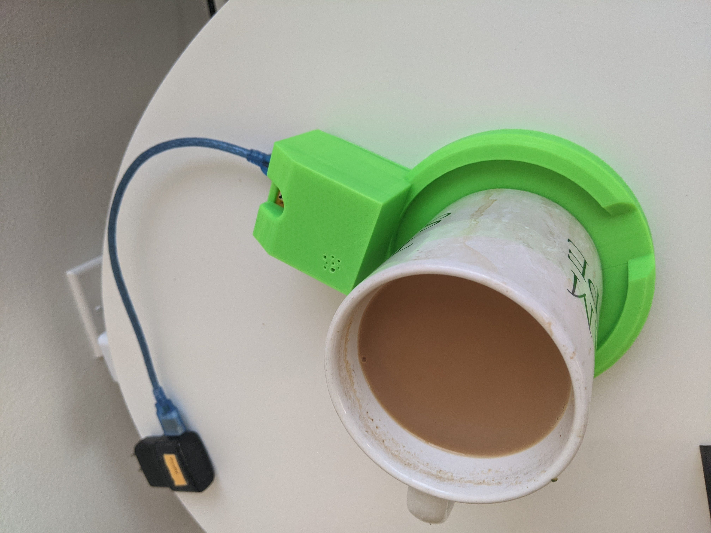 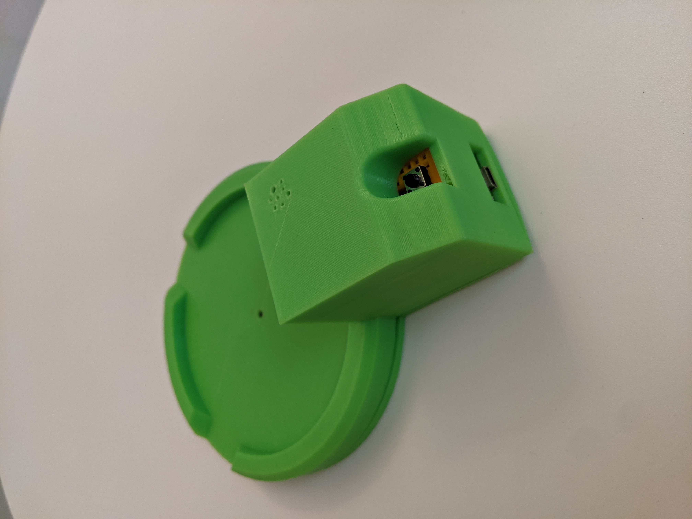 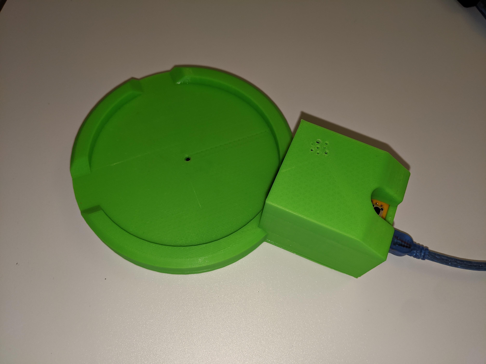To make the coaster, I designed a 3D model in OnShape. The design is a coaster (with edges) and an area for the electronics. The model is made of 2 parts that snap together to enclose the circuit. There are cutouts for the button and Arduino plugin. The coaster can fit mugs up to 4 inches and has cutouts in the wall for low sitting mug handles.
Operation
The coaster works by taking value averages for room temperature and the hot drink, and then beeps when the readings hit a certain level. When the coaster is plugged in, or the button is pressed, it starts callibrating. To do this, it takes thermistor values (before mug is placed) for 10 seconds, averages them, and beeps when it's finished. Then, the coaster waits 3 minutes for the heat to even out on the mug. It then takes 10 more seconds of readings, averages them, and beeps again. After this, it calculates a goal value of 20% of the way to room temperature value from the starting value. Then it takes thermistor readings over and over, and when the desired value is reached, will beep. However, if the desired value is never reached, it will beep after 15 minutes and turn off. Once the goal is reached or 15 minutes passes, it "turns off" by doing nothing except checking for a button press. The button can be pressed to callibrate again.